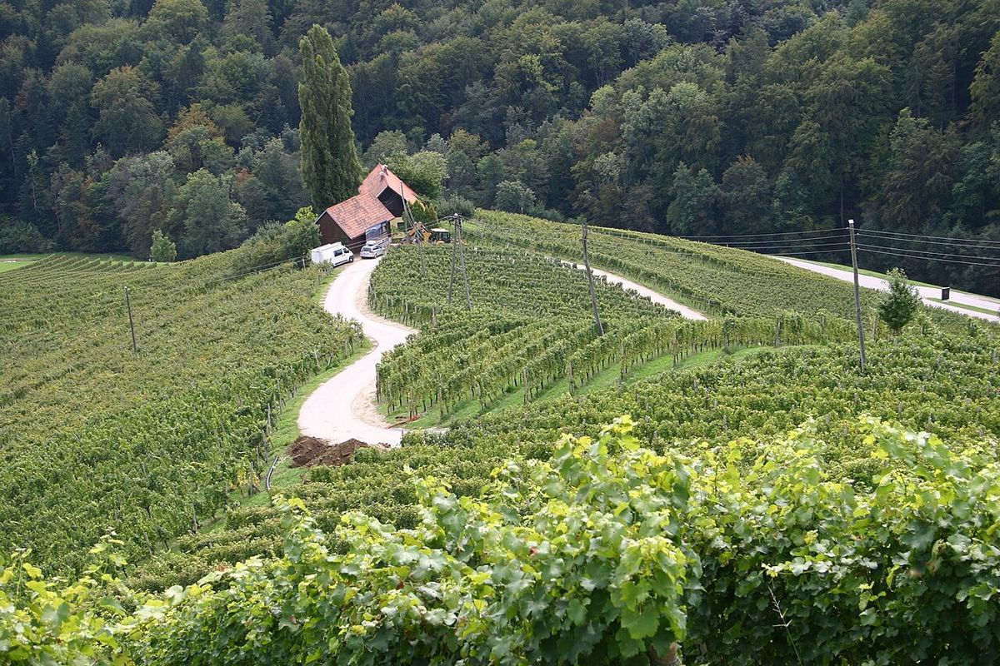

Slovenia
La Slovenia, tra le Alpi, l’Adriatico e la pianura pannonica, è un piccolo paese vitivinicolo di grande tradizione, noto soprattutto per i bianchi. Le colline di Goriška Brda, contigue al Collio italiano, sono un riferimento per la Rebula e per i bianchi macerati.

Storia
La viticoltura nel territorio dell’attuale Slovenia è anteriore all’arrivo dei Romani, che la consolidarono e la diffusero. Nel Medioevo monasteri e ordini religiosi mantennero i vigneti, e per secoli la regione fece parte dei domini asburgici, che la legarono alla tradizione vitivinicola centroeuropea. Nella città di Maribor cresce una vite di Žametovka piantata diversi secoli fa, considerata una delle più vecchie del mondo, e la cantina storica di Ptuj è tra le più antiche del paese. Come nel resto d’Europa, alla fine dell’Ottocento la fillossera distrusse gran parte dei vigneti.
Dopo la Prima guerra mondiale l’ovest del paese passò per un periodo sotto sovranità italiana, mentre il resto entrò a far parte della Jugoslavia. Nel periodo jugoslavo dominarono le grandi cooperative e la produzione di vino sfuso. L’indipendenza nel 1991 e l’ingresso nell’Unione europea nel 2004 diedero impulso alle aziende familiari che imbottigliano il proprio vino. Alcune di esse, soprattutto lungo il confine con l’Italia, sono diventate punti di riferimento della viticoltura naturale e dei bianchi a lunga macerazione, spesso chiamati vini orange o ambrati.
Clima e suoli
La Slovenia riunisce in poco spazio influenze molto diverse. L’ovest risente dell’Adriatico, con inverni miti, estati calde e venti come la bora, mentre l’est ha un clima continentale, con inverni freddi ed estati calde. A ovest dominano le marne e le arenarie del flysch, chiamate localmente opoka o ponca, e sul Carso la terra rossa su calcare. A est abbondano marne, argille e sabbie su colline dolci.
Regioni
Il paese si divide in tre grandi regioni vitivinicole. La Primorska, a ovest, comprende Goriška Brda, la valle del Vipava, il Carso e l’Istria slovena. A Goriška Brda, prosecuzione naturale del Collio italiano, spiccano Rebula, Sauvignonasse, Chardonnay, Pinot Grigio e Merlot; il Carso è la terra del Teran, un rosso da uve Refošk. La Podravje, a nord-est, che comprende la Stiria slovena e il Prekmurje, è soprattutto zona di bianchi freschi e aromatici di Laški Rizling, Šipon (Furmint), Sauvignon Blanc, Riesling, Traminer e Pinot Grigio, oltre a vini dolci da vendemmia tardiva. La Posavje, a sud-est, è nota per il Cviček, un rosso leggero e di bassa gradazione ottenuto da un uvaggio di varietà rosse e bianche, e per i rossi della Bela krajina, dove si coltiva la Modra frankinja (Blaufränkisch).
Vitigni e stili
Anche se si producono rossi interessanti, soprattutto in Primorska, la maggior parte della produzione è di vino bianco. Gli stili vanno dai bianchi giovani, freschi e aromatici ai vini da invecchiamento fermentati e affinati in legno, dai bianchi macerati sulle bucce per giorni o mesi agli spumanti e ai vini dolci da uve surmature, botritizzate o ghiacciate. La Rebula è il vitigno simbolo dell’ovest; il Laški Rizling, nome sloveno del Welschriesling, è il bianco più diffuso a est.
Normativa
La legislazione slovena distingue il vino da tavola, il vino regionale a indicazione geografica e i vini di qualità a denominazione di origine protetta, che possono riportare la menzione kakovostno (di qualità) o vrhunsko (di qualità superiore). Alcuni vini tradizionali, come il Cviček o il Teran, hanno un riconoscimento specifico legato alla loro zona. Per le vendemmie tardive esistono predicati come pozna trgatev, izbor, jagodni izbor, suhi jagodni izbor e ledeno vino (vino del ghiaccio), che ricordano quelli di Germania e Austria.